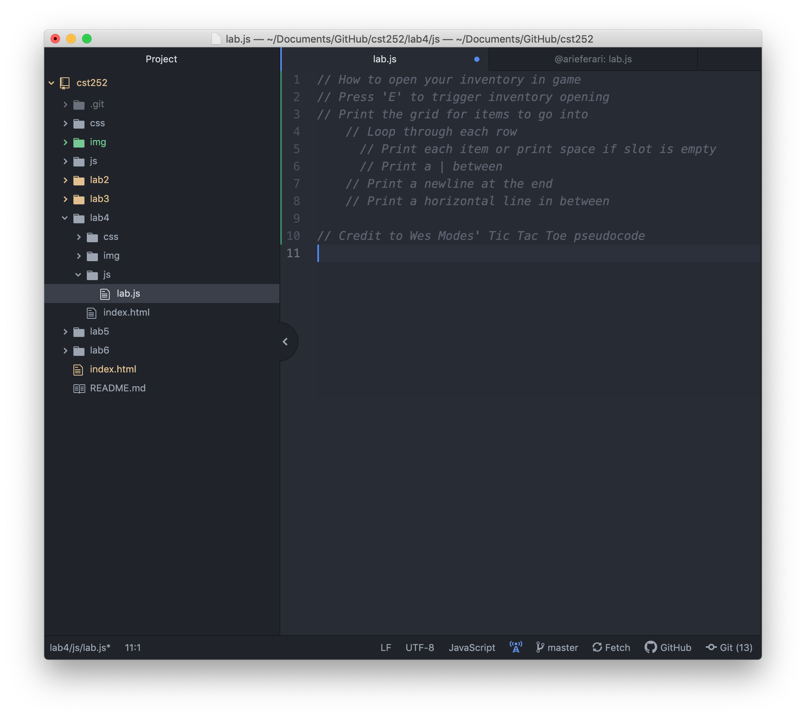
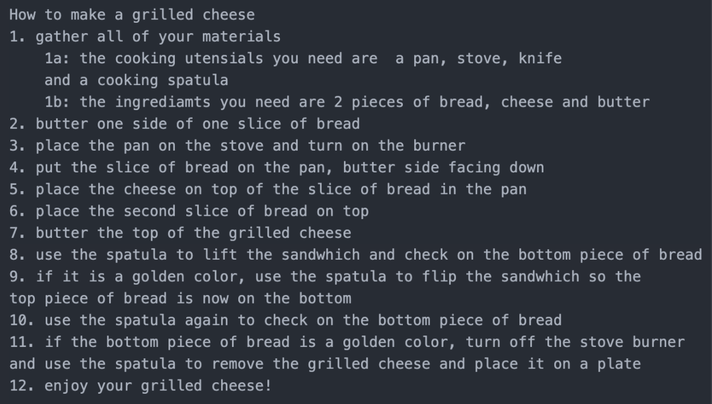

Lab 4: Pseudocoding & Problem-solving
In this lab, we used JavaScript for the first time by pseudocoding.
We first had to break down, or pseudocode, all of the steps that go into an everyday task.
We then had to pseudocode a computer task. Once we had all of the steps written out, we brought it into a text editor,
saved it as a JavaScript file and turned it into JavaScript comments using //.
Challenges
For this lab, it was challenging to think of a topic
to base our psuedocode on.
Results
You are seeing the results of this lab in this index.html

